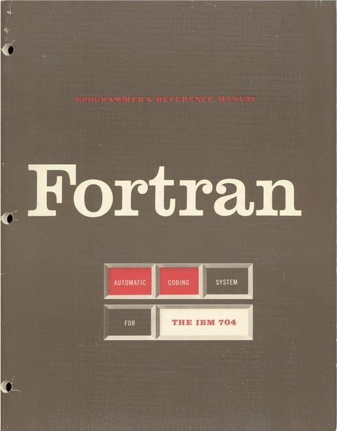
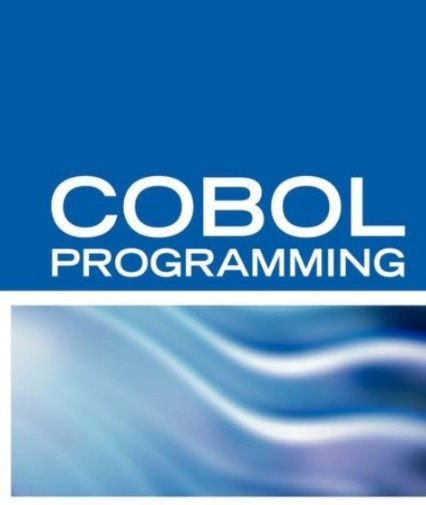
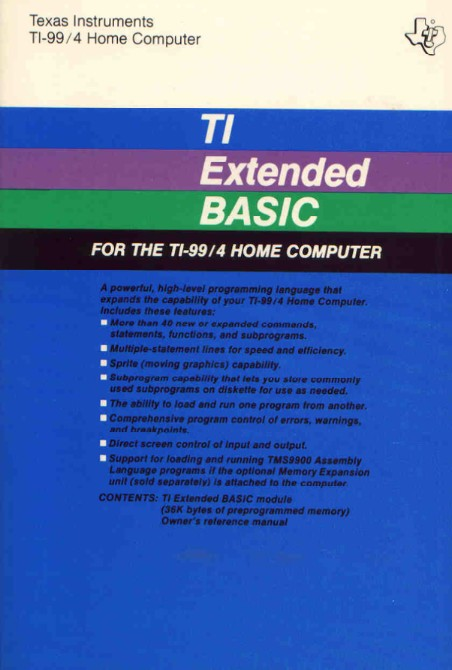

Fortran
Fortran (sau FORTRAN) este un limbaj de programare născut în anul 1950 și care este încă folosit după jumătate de secol de existență. Numele său își are originea din "Formula Translating System". Versiunile mai vechi ale acestui limbaj erau cunoscute drept FORTRAN, dar după Fortran 90 numele nu a mai fost scris în întregime cu majuscule. Deși la început a fost un limbaj procedural, cele mai recente versiuni au inclus suport pentru programarea obiectuală.
Primul compilator FORTRAN a fost dezvoltat pentru IBM 704 în 1954–57 de o echipă IBM condusă de John W. Backus. Acesta a fost un compilator de optimizare, deoarece autorii considerau că nimeni nu ar fi folosit limbajul dacă performanțele sale nu ar fi fost comparabile cu Assemblerul.
Limbajul a fost adoptat pe scară largă de către oamenii de știință pentru scrierea programelor ce foloseau numere în mod intensiv, fapt ce a încurajat autorii de compilatoare să producă soft-ul lor în așa fel încât să genereze cod mai rapid. În special includerea unui tip de date numeric complex în limbajul FORTRAN l-a făcut potrivit pentru folosirea în știința computațională.
Numeroase standarde ale limbajului au apărut: FORTRAN II în 1958, FORTRAN IV în 1961, FORTRAN 66 în 1966, FORTRAN 77 în 1977 , Fortran 90 în 1990, Fortran 95 în 1995, și Fortran 2003 în 2003. Fortran III a fost creat în 1958, lăsând posibilitatea includerii de cod asamblare de tip Inline în programele sale; dar nu a fost niciodată dat spre folosință deoarece conceptul de portabilitate al unui limbaj de nivel înalt ar fi fost pierdut.
Cobol
COBOL (Common Business Oriented Language) este un limbaj de programare foarte asemănător limbii engleze vorbite și care este des folosit, încă și în prezent, de firme și în alte scopuri administrative. COBOL este numit un limbaj legacy deoarece este într-un format pe care noile sisteme nu au cum să-l suporte. Cu toate acestea, COBOL este esențial pentru succesul multor companii și, drept dovadă, a rămas pe picioare în ciuda avansului tehnologic.
COBOL există încă din 1959 când a fost conceput de Conferința asupra Limbajelor de Sisteme de Date (CODASYL), conferință condusă de Dr. Grace Murray Hopper. A fost unul din primele limbaje high-level create la aceea vreme. COBOL rulează atât pe mainframe, cât și pe PC.
În timpul anilor '80, multe companii mici și-au mutat programele COBOL de pe mainframe pe PC, dar acest lucru a fost făcut cu greutate. În anii '90, COBOL era deja considerat un lucru al trecutului, în mare parte datorită faptului că tehnologia devenea din ce în ce mai obiect-orientată, îndepartându-se de mainframe.
Totuși, era încă folosit de banci și alte corporații majore ce depindeau enorm de acuratețea și stabilitatea programelor ce le țineau companiile pe picioare. Loviți de ideea de a migra către alte limbaje, au realizat că mare parte din programele în COBOL erau destul de mari și prea greu de migrat, prin urmare companiile s-au pregătit pentru secolul 21 prin actualizarea programelor COBOL existente.
Basic
BASIC (Beginner's All-purpose Symbolic Instruction Code) reprezintă o familie de limbaje de programare high-level, general-purpose, ale căror design pune accentul pe uşurinţă de utilizare. În 1964, John G. Kemeny, Thomas E. Kurtz şi Mary Kenneth Keller au creat limbajul BASIC original la Colegiul Dartmouth din New Hampshire, Statele Unite. Intenționau sa le permită și studenților din afara domeniilor știițifice și matematice să folosească calculatoarele. În aceea vreme aproape orice utilizare a calculatorului necesita scrierea de soft propriu, lucru pe care doar oamenii de știiță și matematicienii tindeau să-l învețe.
Versiuni ale limbajului BASIC au devenit folosite la scară largă pe microcomputere la mijlocul anilor '70 și în anii '80. Posibilitatea de a avea un limbaj de programare ușor de utilizat pe aceste PC-uri timpurii a permis micilor afaceri, profesioniștilor, hobbiștilor și consultaților să-și dezvolte propriul software la un preț accesibil. În 2010, BASIC era popular în multe dialecte de computare și a dus astfel la creearea de noi limbaje precum Visual Basic de la Microsoft.
Limbajul a avut ca bază FORTRAN II, cu influențe de la ALGOL 60 și mici adiții pentru a-l face mai econom din punct de vedere al timpului de procesare. Inițial, BASIC era folosit ca suport pentru muncă matematică asiduă, primind funcționalitate pentru caractere și stringuri abia in 1965. Cu dorința de a-și face limbajul cunoscut, cei trei creatori au făcut compilatorul valabil pe gratis.